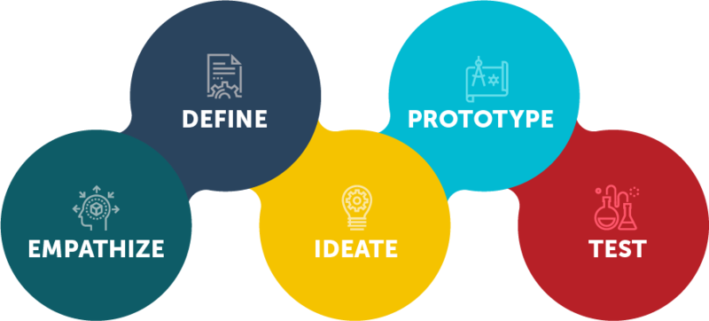
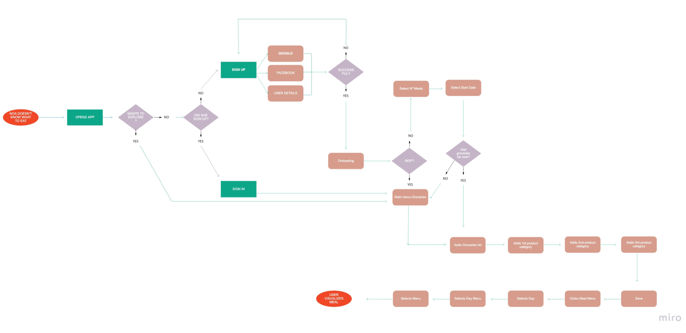

This challenge consisted in designing for NWI, a fictional company that wanted to reinvent itself by developing tools to help people achieve their health and wellness goals. Even though NWI had many years of experience in the wellness field, their program had been slow to catch up with technology. They had seen a substantial drop in memberships and wanted to find a way to add value to their members. So the task to be completed was to:
My role included all the design thinking process: from brainstorming for ideas to understanding the user, defining a final product, prototyping and testing it. This project was to be completed in 4 months, from June to September.
I first had the idea to focus on a growing specialized market, vegetarian, because of its proliferation and its impact on the food industry. It would be an App especifically designed to help vegetarians achieve their fitness goals via a nutrition tracker . The project has been designed following a design-thinking methodology that is built from 5 pillars:
Design thinking process by David Kelley, Standford d.school
1. EMPHATIZING WITH THE AUDIENCE
To begin, it is important to develop an understanding of your target user's issues, and in order to do so, I did and initial background research to understand more about their fitness & nutrition habits. For that, I conducted surveys (24 vegetarians) and also 4 interviews to help with some insights.


Although the survey and interviews results showed the majority of vegetarians who responded do like taking care of their health & fitness, the interviews revealed a major concern regarding my idea: tracking the nutrients you consume may be good but it can turn into an obsessive behaviour, to a point that you stop enjoying the simple fact of working out and being vegetarian.
2. DEFINING THE SITUATION
In this second phase, I used all previous insights to help me frame a clear problem of the situation.
By creating a user persona, From all gathered data, I also realized it was mainly vegetarians aged 24-33 that care more about their health but do not have that time to fully care for it. This also helped me identify opportunities to tackle the issues.
This framework is very helpful to highlight a business problem to solve and break it down into small assumptions that can then be used to formulate hypothesis on what could be done about them. Since it is important to find a spot between the user needs and the business goals, This framework was very useful to help me get down to the main issues.

The Lean UX Canvas helped me with the definition of the point-of-view. Although Noa workouts and exercises, she does not have enough time to plan her meals.
Designing a simple app (for vegetarians) to plan her meals based on the groceries that she has purchased or she already has at home/on her fridge”. No hassle and very easy to use, the aim is to provide delicious meals based on what she already has making it an efficient and fun way of eating healthy food.
Now, having understood the aspirations of this user, I created the ideal journey map to help me avoid pain points when designing the prototype:
Seeing the details in sharp relief gave me the chance to translate what I understood into a design that better accommodates the persona to design for.
3. IDEATION
At this point, having understood the needs of the user, it was time to face the design. I started brainstorming to come up with ideas for the App design and to help me define the key features:
Illustrating things works best for the understanding of any concept or idea, so I also tried to portray this ideal journey here:


I also used the mind map technique to brainstorm for ideas to help with the definition of features.
I did this very very basic sketch to conceptualize it a bit more, and which I would work on and use to create a first lo-fi wireframe
4. PROTOTYPE
With a clear idea of the key features to include and to have something to try on and be able to get closer to a final product, I created a prototype that I could test to get some feedback

"As a user, I can add my list of groceries into the app which will prepare me a weekly meal plan with the products I introduced so that I already know what to cook at each time. "

"As a user, I can access my weekly meal plan (based on my ingredientes), where I can check what my next meal is right away, so that I don’t waste time thinking about what to cook for lunch or dinner."
I created this user flow to have a diagram of all the steps the users would need to follow to complete an action and then started creating all the screens for these key features
5. TESTING
Now that I had something solid created, it was time to test it to validate
With the initial wireframe I tested the concept with 4 users in order to validate the user flow and the patterns. Thanks to this, I found out that the key feature, adding the list of groceries, was overwhelming as it was overly charged with dropdown lists with the different product categories so I iterated on it and created a new prototype.
You can see the evolution of this main feature, adding the list of groceries, as I was trying to improve it here:
first version (bad user experience)
second version (better user experience)
And here is how the meal planner changed of design and patterns:
first version
second version
third version
Through the testing round I was able to discover weak points in the design and iterate on them, again this shows how important is it to test your designs in early stages in order to make amends before any final releases.

Create your list of groceries you just bought or that you already have at home by adding them to the list.
The app will automatically create a weekly meal plan based on the products you introduced so that you can check what to prepare to eat each time
Finally, considering your regular products, the system will suggest you new delicous recipes that you may like, and if you don't have some of the ingredients, you will be able to add them to your shopping list right from the recipe.
Pattern unification is important
Impact of user research on project definition
Time constraints, limited budget and small data set, I would have done things differently given more time and resources.
Again, testing! One can get blinded by his own designs!